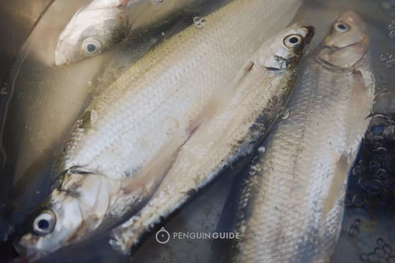
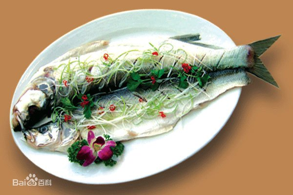

太湖白鱼：亦称“鲦”“头尾俱向上”而得名，体狭长侧扁，细骨细鳞，银光闪烁，是食肉性经济鱼类之一。目前尚未养殖，主要依靠天然捕捞。白鱼肉质细嫩，鳞下脂肪多，酷似鲥鱼，是太湖名贵鱼类。《吴郡志》载：“白鱼出太湖者胜，民得采之，隋时入贡洛阳”，当时白鱼已作为贡品上贡皇庭。白鱼大多在太湖敞水域中生长，以小鱼虾为食，是太湖自繁殖鱼类，一年四季均可捕获，在六．七月生殖产卵期捕捞产量最高。《吴郡志》有“吴人以芒种日谓之入霉，梅后十五日谓之入时。白鱼至是盛出。谓之时里白”。解放后，对白鱼资源进行保护，繁殖期禁止捕捉，使之常盛不衰。
 1300多年前，太湖白鱼就被老百姓夸为无锡第一鱼。太湖白鱼又称太湖银刀，相传这名字的由来还有一个动人的传说。相传明朝末年，清兵打入太湖，苏州太湖渔民张三带领一帮人与南下的清兵在太湖一带激战，有次还攻入苏州城。一次，张三在湖上与清兵作战时，手臂中箭，手中大刀掉入湖中。他忍住剧痛，弯腰从湖中拾起一把银刀，向清兵杀去，清兵被他的神勇给镇住了，纷纷落荒而逃。张三再一瞧手中，原来是一条银光闪烁的白鱼，这样‘银刀’这个名字就叫开了。”